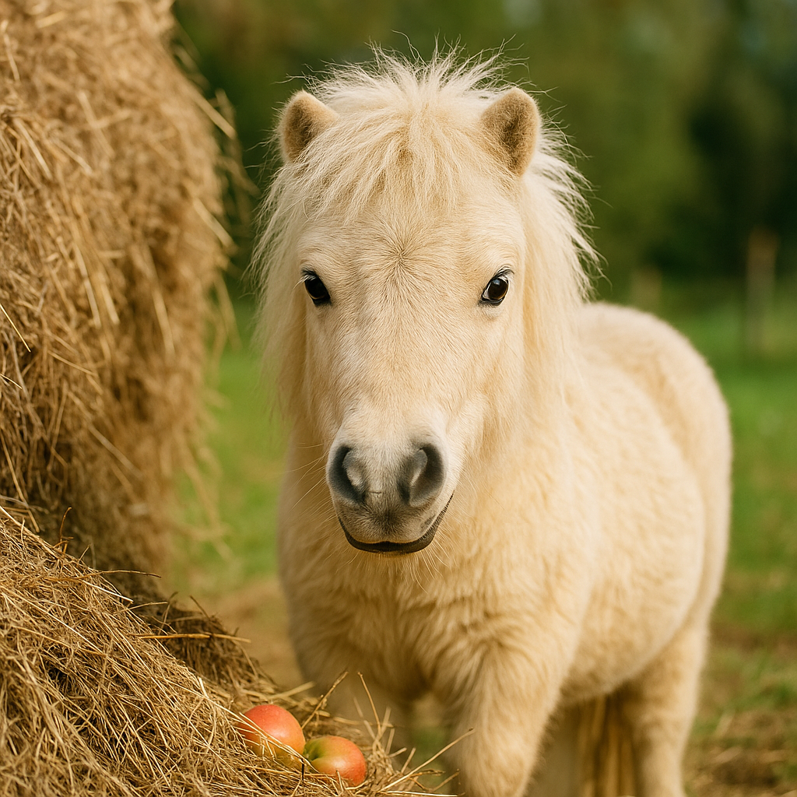
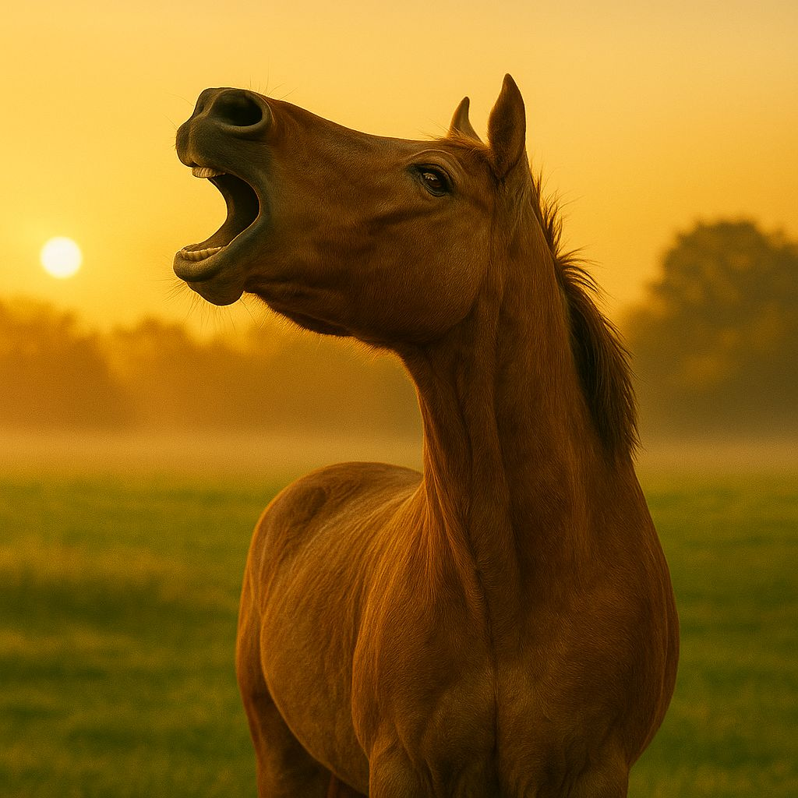
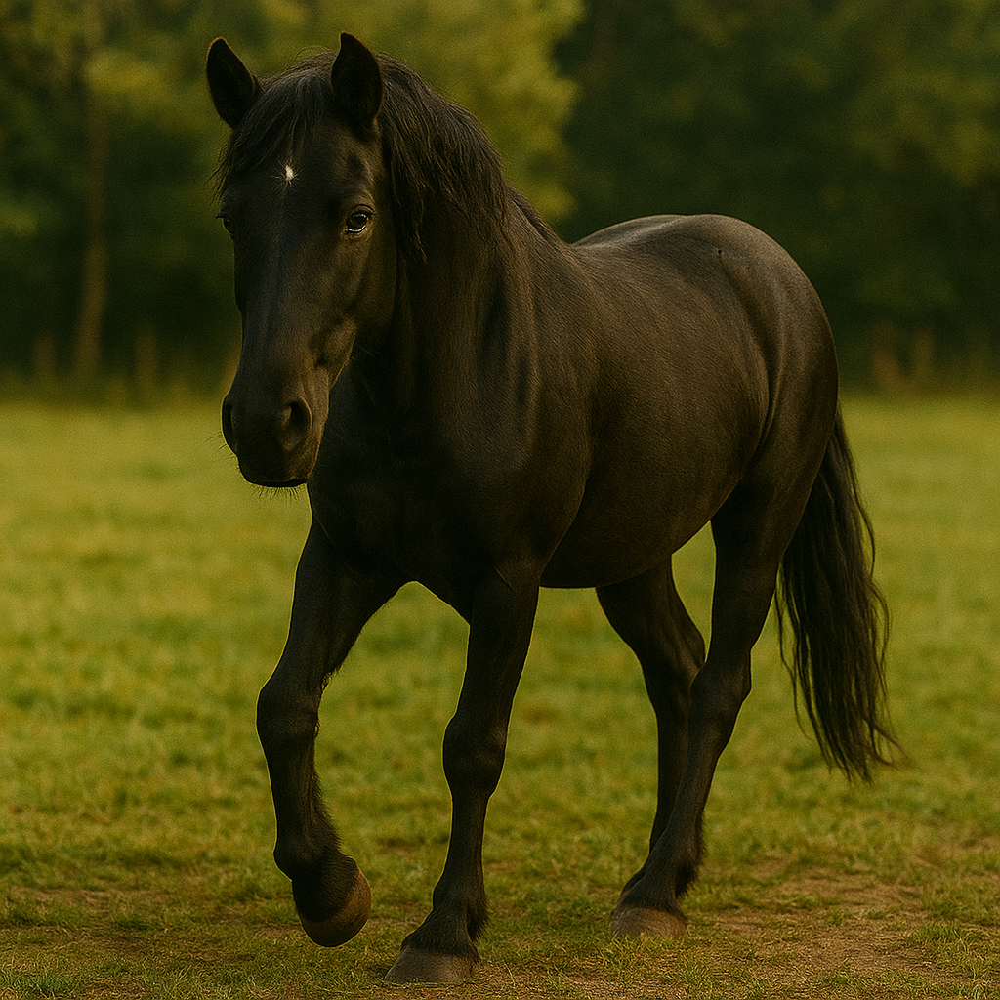
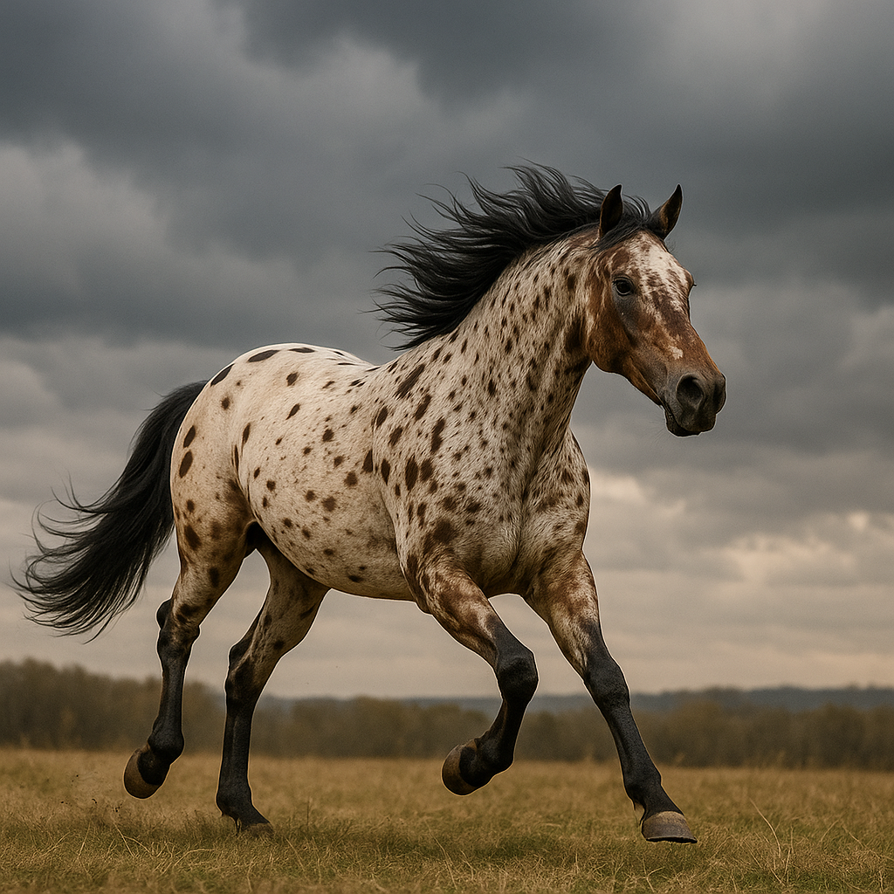
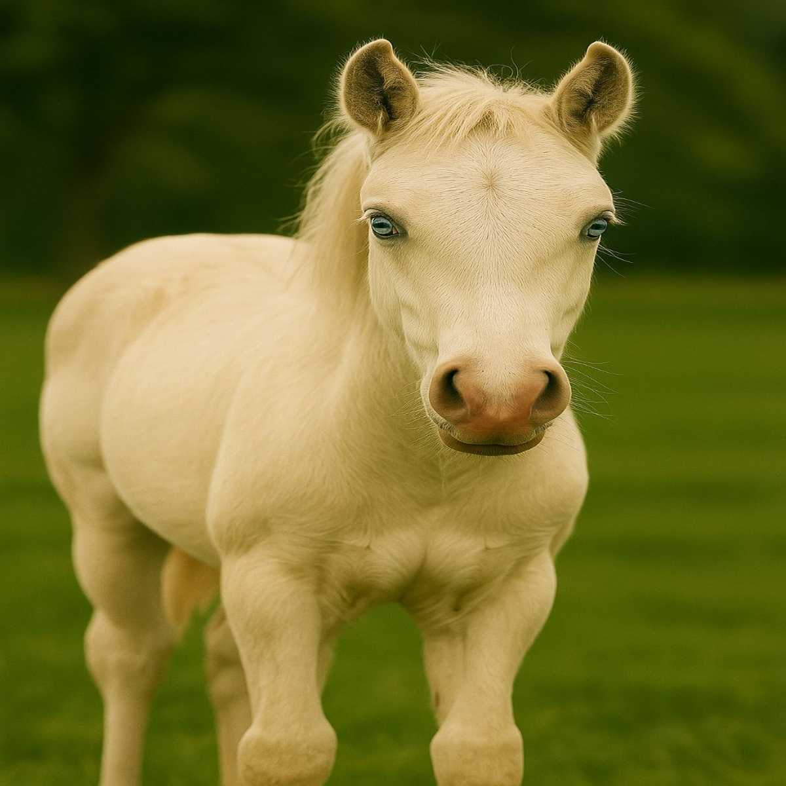
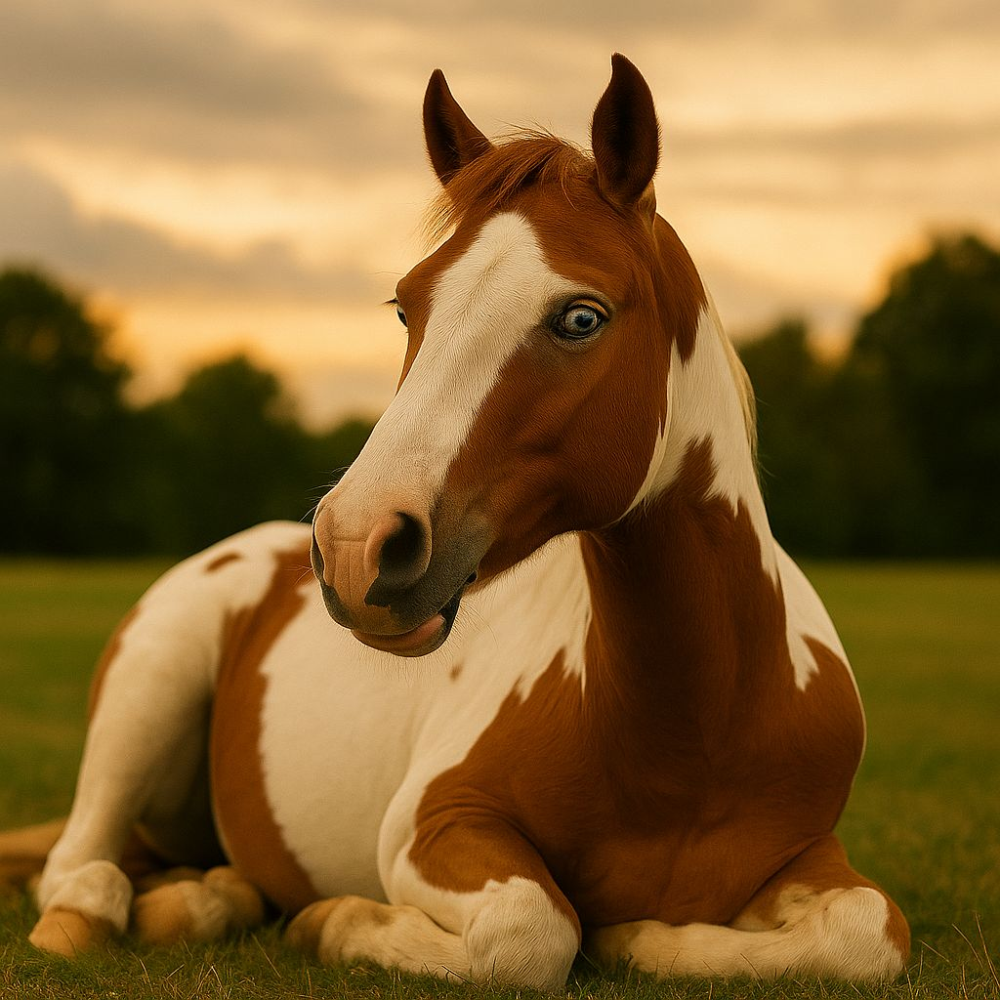
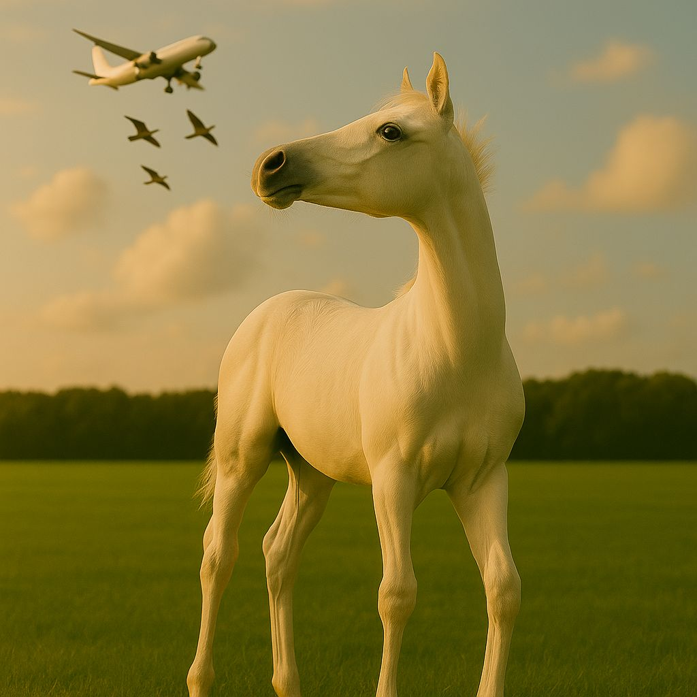
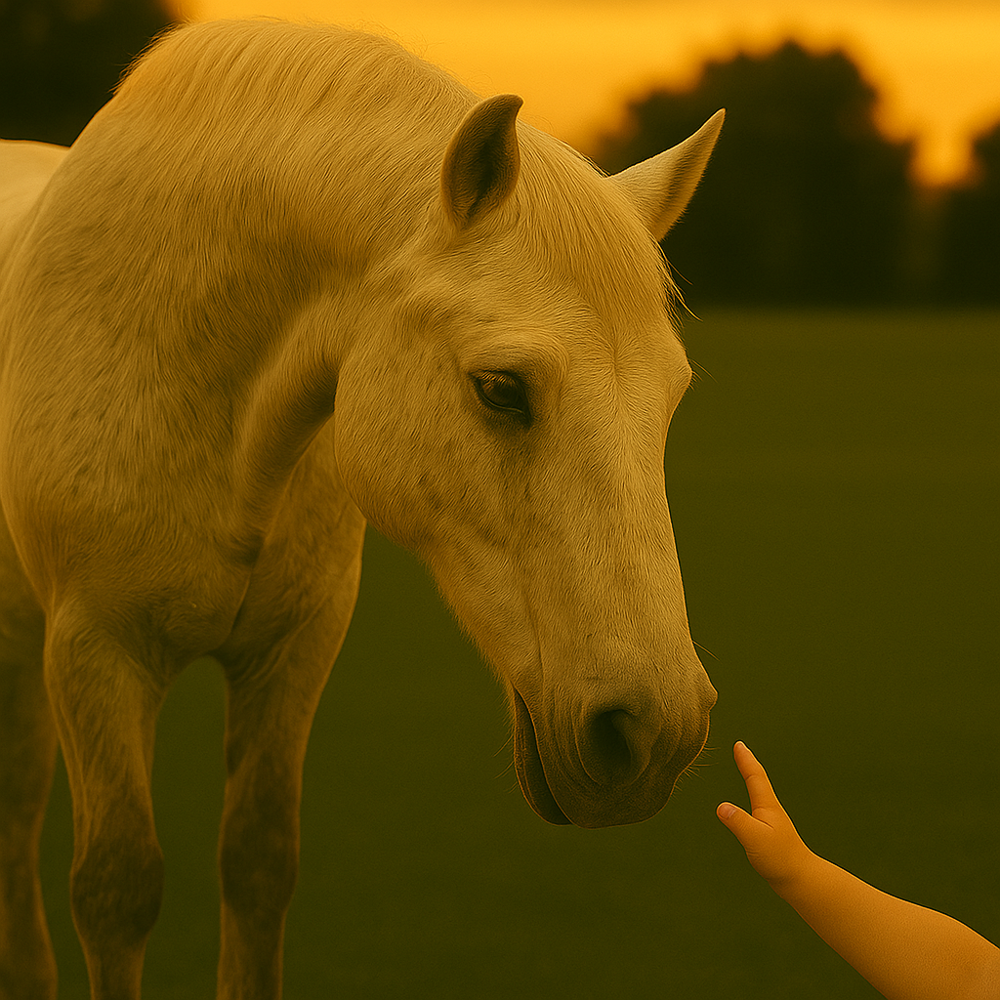
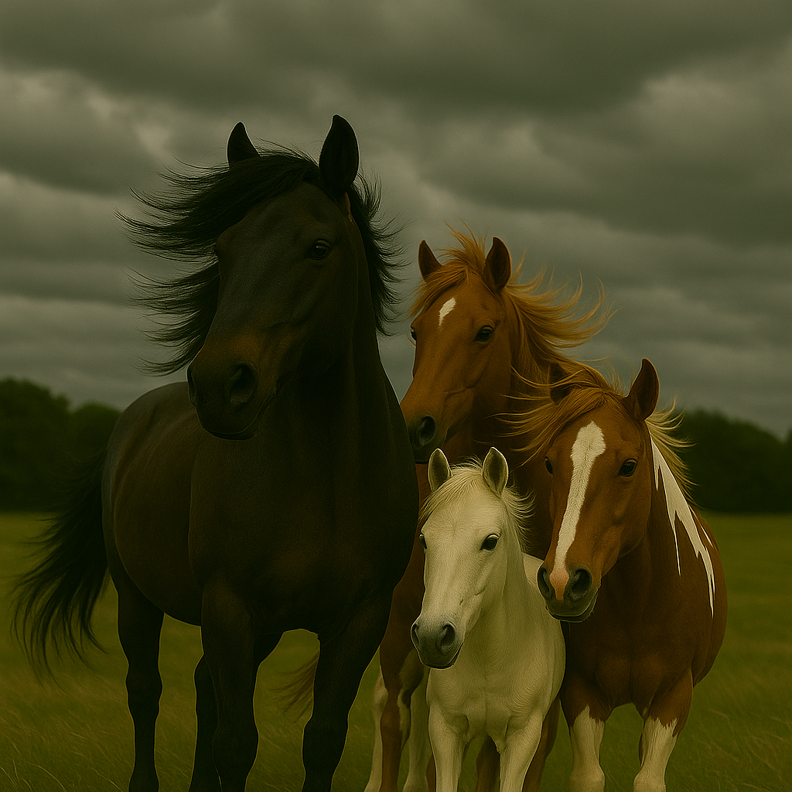
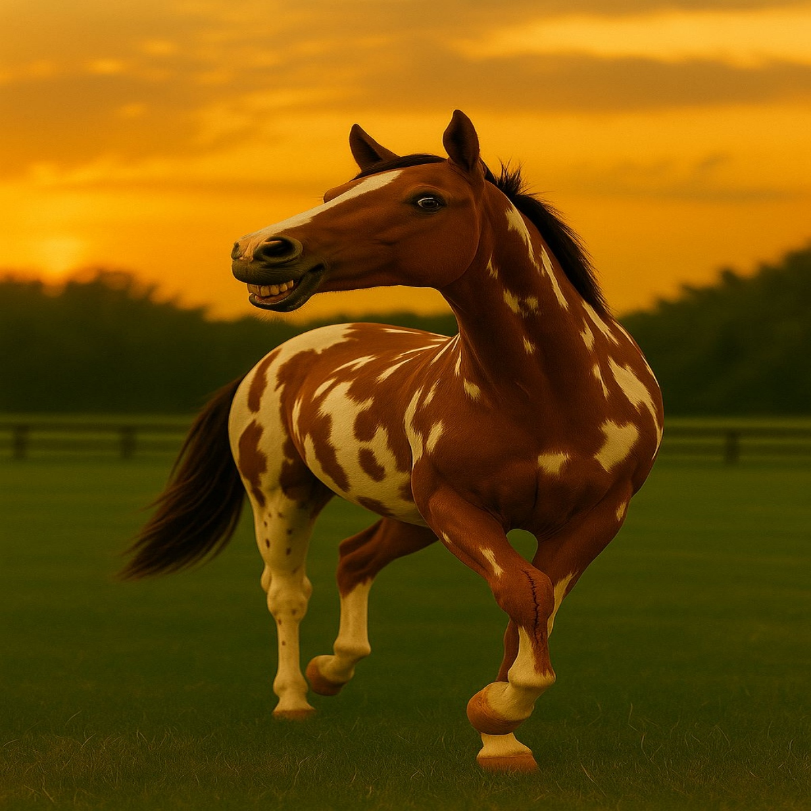

Edad: 2 Años.
Cruce: Pony Shetland.
Personalidad: Travieso, sociable y juguetón.
Curiosidad: Esconde manzanas detrás del heno y las guarda para más tarde.
Busca hogar porque su mamá murió al parir; y fue criado por voluntarios.
Ideal para: Niños o familias alegres que busquen compañía divertida.
“Copito no busca dueños, busca aventuras.”
Adoptame
Edad: 22 Años.
Cruce: Criollo con árabe.
Personalidad: Alegre, curioso y juguetón.
Curiosidad: Relincha cada mañana cuando amanece.
Busca hogar porque fue rescatado tras años de excesivo trabajo en el campo.
Ideal para: Personas activas o familias que disfruten de la naturaleza y los paseos.
“Sol busca un hogar donde cada amanecer tenga nombre"
Adoptame
Edad: 4 Años.
Cruce: Frisón con pura sangre inglés.
Discapacidad o condición: Ligera cojera; no le impide caminar ni correr suavemente.
Personalidad: Tierna, paciente y cariñosa.
Curiosidad: Se acerca sola a quien percibe triste, buscando consolarlo.
Busca hogar porque nació con una desviación leve en una pata trasera, y no fue aceptada para cría.
Ideal para: Familias tranquilas o personas en proceso de sanación emocional.
“Savia camina diferente, pero su alma siempre va al frente.
Adoptame
Edad: 6 Años.
Cruce: Mustang con appaloosa.
Personalidad: Fuerte, protector y aventurero.
Curiosidad: Galopa con euforia justo antes de que empiece a llover.
Busca hogar porque fue rescatado de competencias donde fue sobreexigido.
Ideal para: Personas valientes y con espíritu libre que disfruten de la aventura.
“Trueno ya no compite contra nadie, solo corre hacia la libertad.”
Adoptame
Edad: 5 Meses.
Cruce: Andaluz con criollo.
Discapacidad o condición: Sordera parcial; responde a gestos y vibraciones.
Personalidad: Sereno, noble y empático.
Curiosidad: Percibe las pisadas a distancia; se calma con el tacto humano.
Busca hogar porque sus dueños se mudaron a la ciudad y no pudieron llevarlo.
Ideal para: Personas pacientes y sensibles que valoren la comunicación no verbal.
“Echo no escucha todo, pero entiende cada emoción.”
Adoptame
Edad: 3 Años.
Cruce: Española con cuarto de milla.
Discapacidad o condición: Ceguera parcial en un ojo; se orienta perfectamente.
Personalidad: Tranquila, sensible y amorosa.
Curiosidad: Siempre gira la cabeza hacia la voz que le habla con cariño.
Busca hogar porque su anterior dueña enfermó y no pudo seguir cuidándola.
Ideal para: Personas pacientes y empáticas que disfruten del contacto calmado.
“Aurora no necesita ver para reconocer el amor.””
Adoptame
Edad: 1 Años.
Cruce: Pura sangre inglés con árabe.
Personalidad: Libre, soñadora y observadora.
Curiosidad: Se queda quieta mirando el cielo cuando pasan aves o aviones.
Busca hogar porque porque nació en un rancho que cerró por falta de recursos.
Ideal para: Personas sensibles, artistas o amantes del silencio.
“Nube recuerda que incluso tras la tormenta, el cielo vuelve a abrirse.”
Adoptame
Edad: 23 Años.
Cruce: Lusitano.
Personalidad: Paciente, maternal y protectora.
Curiosidad: Inclina la cabeza para que los niños la acaricien.
Busca hogar porque fue caballo de terapia; se jubiló y busca un hogar tranquilo.
Ideal para: Refugios, personas mayores o familias con niños.
“Estrella ya curó muchas almas. Ahora merece descansar entre abrazos.”
Adoptame
Edad: 5 Años.
Cruce: Mustang con percherón.
Discapacidad o condición: Rigidez articular leve; requiere caminatas suaves.
Personalidad: Protectora, sabia y serena.
Curiosidad: Siempre se coloca entre los potrillos cuando hay viento fuerte.
Busca hogar porque fue abandonada tras quedar preñada; su potrillo fue adoptado.
Ideal para: Personas amorosas que valoren la calma y la compañía tranquila.
“Tormenta ya cargó demasiado. Ahora solo necesita amor y descanso.”
Adoptame
Edad: 5 Años.
Cruce: Árabe con cuarto de milla.
Discapacidad o condición: Recuperada de una lesión grave en una pata delantera.
Personalidad: Competitiva, leal y apasionada.
Curiosidad: Se emociona cuando escucha aplausos, como si recordara la pista.
Busca hogar porque fue retirada de competencias; fue rehabilitada y ahora disfruta del descanso.
Ideal para: Personas disciplinadas y pacientes, con experiencia ecuestre.
“Centella brilla más cuando la miran con amor, no con prisa.”
Adoptame